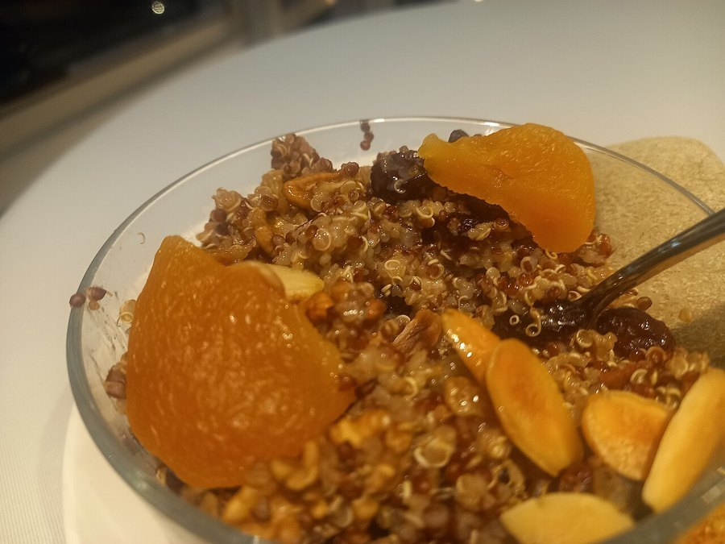

Cinnamon and Brain Health: Does It Really Support Memory?
It's one of the oldest spices in the kitchen cabinet, and one of the newer ones in brain-health research. Here's what cinnamon can and can't actually do for your mind.

Key takeaways
- Cinnamon's main brain-relevant effect is indirect, through modest blood sugar and anti-inflammatory benefits.
- Animal studies show more dramatic cognitive effects than the small number of human trials so far.
- Ceylon cinnamon is the safer choice for regular use because it has far less coumarin than common cassia cinnamon.
- It isn't a stand-alone memory treatment; the evidence supports a supporting role, not a dramatic effect.
- A normal culinary amount is low-risk; concentrated supplement doses need more caution.
Cinnamon shows mild blood-sugar-lowering and anti-inflammatory effects in human studies, both of which matter for brain health over time. Direct evidence that it improves memory in people is limited and comes mostly from small or animal studies, so it's best viewed as a reasonable everyday habit, not a proven cognitive treatment.
Cinnamon shows up constantly in "brain food" lists, usually alongside turmeric and berries. The evidence behind it is real, but it's thinner and more indirect than the confident headlines suggest. Most of what cinnamon reliably does happens at the level of blood sugar and inflammation, both of which do connect to brain health over the long run, just not in the dramatic, immediate way some marketing implies.
What is cinnamon and what's in it?
Cinnamon comes from the inner bark of several related tree species, most commonly Cinnamomum cassia (common "cinnamon" sold in most grocery stores) and Cinnamomum verum, known as Ceylon or "true" cinnamon. Its most-studied active compound is cinnamaldehyde, which gives cinnamon its flavor and accounts for much of its antioxidant and anti-inflammatory activity in lab studies. Cassia cinnamon also contains notably more coumarin, a compound discussed further below, than Ceylon cinnamon does.
How might cinnamon affect the brain?
The proposed mechanisms are mostly indirect. Cinnamon's antioxidant compounds may reduce oxidative stress, a factor implicated in brain aging generally. Its effect on blood sugar, covered next, matters because poorly controlled blood sugar is itself linked to faster cognitive decline over time. Some animal studies have found cinnamon extract reduced markers associated with Alzheimer's-type brain changes, but animal brain chemistry doesn't always translate cleanly to human outcomes, and that gap hasn't been closed by large human trials yet.
What does the research say about cinnamon and blood sugar?
This is cinnamon's best-supported effect. Multiple human trials and meta-analyses have found that cinnamon, typically in doses of 1 to 6 grams a day, modestly lowers fasting blood sugar and improves insulin sensitivity in people with prediabetes or type 2 diabetes. The effect size is generally modest, not dramatic, and results vary between studies. Since blood sugar swings are increasingly tied to brain fog and cognitive symptoms, this blood-sugar effect is likely cinnamon's most legitimate connection to how clearly you think day to day.
Can cinnamon reduce brain inflammation?
In lab and animal studies, yes, cinnamaldehyde and related compounds reduce markers of inflammation. Chronic low-grade inflammation is considered a contributor to cognitive aging, which is the logic behind including cinnamon in an anti-inflammatory diet pattern. Human trials measuring inflammatory markers after cinnamon intake show more modest, inconsistent results than the animal data, so this remains a plausible, not proven, pathway in people.
Does cinnamon actually improve memory in studies?
The honest answer is: not clearly, at least not yet in human research. A small number of human trials have tested cinnamon extract on attention or cognitive test performance, with mixed, generally modest results. The more striking cognitive findings come from rodent studies, which showed improved learning and memory markers after cinnamon extract, at doses and in brain-exposure patterns that don't directly map onto a sprinkle on oatmeal. Treat memory-specific claims about cinnamon with real skepticism until better human trials exist.
Part of the gap comes down to how the compounds behave once they reach the body. Cinnamaldehyde, the compound most studied in animal brain research, doesn't appear to cross the blood-brain barrier easily in the amounts a typical diet provides, which may limit how much of the lab-measured effect actually plays out inside a human brain rather than just in a petri dish or a rodent's smaller, more exposed system. Researchers are still working out whether different cinnamon extracts, metabolites, or delivery methods could close that gap, so this is an area worth watching rather than dismissing outright.
COMPLEX
The memory formula we rate highest in 2026
Cinnamon's evidence for memory is still early. For nutrients with stronger human trial data behind them, Advanced Memory Complex combines citicoline, bacopa, phosphatidylserine and B-vitamins with a transparent, clinically-dosed label.
See Today's Price →Ceylon vs. cassia cinnamon: does the type matter?
For regular, ongoing use, yes. The main practical difference is coumarin, a naturally occurring compound that can stress the liver at high intakes over time. Cassia cinnamon, the type usually labeled simply "cinnamon" in grocery stores, contains substantially more coumarin than Ceylon. Germany's Federal Institute for Risk Assessment and other food safety bodies have flagged this difference specifically for people who eat cinnamon daily rather than occasionally.
| Type | Coumarin content | Best for |
|---|---|---|
| Ceylon ("true") cinnamon | Low | Daily, ongoing use |
| Cassia cinnamon | Higher | Occasional use, not daily high doses |
How much cinnamon is safe, and are there risks?
Culinary amounts, a sprinkle in coffee or oatmeal, are considered safe for virtually everyone. Supplement-level doses of 1 gram or more daily, especially of cassia cinnamon over long periods, carry a theoretical coumarin-related liver risk that's worth discussing with a doctor if you already have liver concerns. Cinnamon can also modestly lower blood sugar and may mildly affect blood clotting, so people on diabetes medication or blood thinners should check with a doctor before taking concentrated cinnamon supplements.
What's the easiest way to add cinnamon to a daily routine?
Most people don't need a supplement to get a meaningful culinary amount. Stirring half a teaspoon into oatmeal, yogurt or coffee is an easy habit that's simple to keep up, and it's a far lower-risk way to experiment than jumping straight to a concentrated capsule. Roasted vegetables, chili, and baked fruit all take cinnamon well if a sweet application isn't your preference. Buying whole cinnamon sticks and grinding them fresh, or confirming a ground product is labeled Ceylon rather than cassia, is a reasonable step up for anyone planning to use it daily rather than occasionally.
Supplement capsules standardize the dose, which matters more for the blood-sugar research than for a general "brain health" habit, since that's where the human trial doses are best defined. If you do try a supplement form, start at the low end of studied doses, around 1 gram daily, and build up slowly rather than starting at the higher end used in some trials.
Does cinnamon compare well with other brain-supporting spices?
It sits in a similar category to several other kitchen spices and compounds researchers have studied for cognitive aging, including berberine, a plant compound with its own blood-sugar-related brain research, covered in our piece on berberine and brain health. Both share the same honest limitation: promising mechanisms and animal data, thinner human cognitive trial evidence. If added sugar and blood sugar swings are a bigger concern for you day to day, our guide to sugar and brain fog covers that connection in more depth.
Want the simplest place to start?
Use cinnamon as one small part of a steadier blood sugar and anti-inflammatory routine. See the memory formulas our editors rate highest for 2026.
See the Top 5 Memory Formulas →Frequently asked questions
Is Ceylon or cassia cinnamon better for brain health?
Ceylon cinnamon is generally the safer choice for regular use because it contains far less coumarin, a compound that can stress the liver in large amounts. Cassia cinnamon, the common grocery-store type, has notably higher coumarin content.
How much cinnamon is safe to eat daily?
About half a teaspoon to one teaspoon of Ceylon cinnamon daily is generally considered safe for most adults. Cassia cinnamon should be used more sparingly due to its higher coumarin content, especially for regular daily use.
Can cinnamon supplements replace blood sugar medication?
No. Cinnamon has shown modest effects on blood sugar in some studies, but it isn't a substitute for prescribed diabetes medication. Anyone on blood sugar medication should talk to a doctor before adding cinnamon supplements.
Does cinnamon improve memory directly?
Most human evidence for cinnamon and memory is preliminary. Animal studies show more promising cognitive effects than the handful of small human trials, so it's not yet accurate to call cinnamon a proven memory booster for people.
Can you take too much cinnamon?
Yes. High intake of cassia cinnamon's coumarin content over time has been linked to liver stress in some case reports, and very large amounts of any cinnamon can irritate the mouth or digestive tract.
Is cinnamon tea good for the brain?
Cinnamon tea provides a mild dose of the same compounds as the spice, in a form that's easy to add to a daily routine. It's a reasonable, low-risk habit, though the amount of active compound per cup is relatively small.
Does cinnamon interact with any medications?
Potentially. Cinnamon, especially in supplement doses, may enhance the effect of blood-sugar-lowering and blood-thinning medications. Anyone on these medications should check with a doctor or pharmacist before taking concentrated cinnamon supplements.
Related: Blood sugar swings and brain fog · Berberine and brain health · Sugar and brain fog · How to improve your memory · Best memory formulas of 2026
Image: TorbeyCharbel / Wikimedia Commons / CC BY 4.0